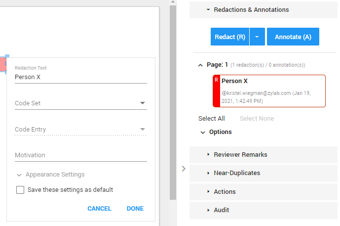

Use the ZyLAB ONE redactions feature to easily protect sensitive, privileged or confidential data
in accordance with the GDPR, by hiding personal data. The Redactions feature can be accessed after selecting a document, under the Redactions & Annotations option.
The Redaction Text option can be used to set the pseudonym. For example, if the user wants to pseudonymize the first and last name of a client, a black box can be placed above the name. Then, a pseudonym can be added by typing it in the Redaction Text option. This will result in the name being hidden by a black box with a pseudonym on top.
By clicking on the Appearance Settings, the appearance of the redaction box can be adjusted. This includes the color of the box, as well as the color of the font of the text that will appear in front of the box. All of these settings can be saved by checking the Save these settings as default option. By clicking Done, the selected field will be redacted using the customized settings.
Now the information about the redaction on the right side of the screen is updated with new information about who performed the redaction, as well as the time and date of the redaction.
The option to quickly redact can be useful when redacting multiple personal data on one page of the document. Select Quick Redact under Redact to be able to quickly redact multiple parts of a document. When all the personal data has been redacted, press Finish Redact. After this, the user can edit the previously made redactions. The user can edit the redactions separately, or edit them all at once by selecting the redaction and pressing Edit Selected.

Redact (R)
Redact (shortcut: R) to protect sensitive, privileged and confidential information by hiding selected content.
Specified sections are blacked out or replaced with something else; Text, for example.
Redactions can be accompanied with 'exemption codes' to identify the regulations under which the redaction is made.
The redacted document can be downloaded (as PDF), printed out or used electronically.
Native files cannot be redacted. Redacting native files changes their character, which is akin to spoliation.
Depending on the permissions you have received, you may not be able to add redactions.
Instructions
Select
in Document View.
Use the plus sign to draw a box.
Double click inside the box to edit the redaction text and/or code set and code entry. You can also add a Motivation (explain why this redaction was made).
The motivation will be added in the Redaction Log and can be burned into to image during the production process.
If needed, change the Appearance Settings. You can change the fill and font color. Click Done when finished. The selected fill color will match the redaction summary color in the right pane.
To save all your settings for the next redaction, select 'Save these settings as default'. Each next redaction will have the same redaction text, code set/entry and appearance settings.
To approve, click Done.
To reject, click Cancel.
You can Edit, Delete or Select your own Redactions via the summaries in the right pane.
In the summary of the Redaction you see the (overlay) text/code (if defined), who redacted and when (including edits).
You can also edit/delete your own redaction by double-clicking on it in the document.
Select the Delete icon or edit the settings of the highlighted (red border) Redaction.
Shortcut: Delete (a selected) redaction with the Delete button on your keyboard (inactive (Quick) Redactions mode).
Shortcut: Rightclick on a redaction to add redaction codes or the settings (of a recently added redaction).
Select All to edit or delete all redactions and/or annotations. Note:
A selection of both redactions and annotations cannot be edited all at once.
Old redactions covered by new redactions are still visible when hovering above them.
Hits are visible in redacted areas: Hover above a hit to read it:
Move (your own) Redaction by clicking on it and dragging it to another position on the same page.
Resize (your own) Redaction by clicking on it, holding a corner or side with the mouse and dragging it to a new position.
Display Options
Define if Redactions are shown.
Quick Redact (Q)
For Quick Redact, press Q and draw a box immediately and repeatedly (if necessary).
Press Q again to leave the Quick Redact mode. Settings and appearance of redactions can be changed at a later time by double clicking on them. Note 1: When double clicking on a Quick Redaction to change the settings/appearance, make sure you are outside Quick Redact mode
(the plus sign is not active/checkbox is not selected). Note 2: Quick Redact mode is not saved when navigating to another document.
Press Q again to continue.
The checkbox 'Quick Redact Mode (Q)' is automatically (de)selected when pressing Q.
For more information, for example on changing the appearance settings, see the information above for regular redactions.
Redact Page (P)
For Redact Page, press P and the current (full) page will be redacted. Settings and appearance of redactions can be changed by double clicking on the page.
For more information, for example on changing the appearance settings, see the information above for regular redactions.
Annotate (A)
Annotate (shortcut: A) to add comments to parts of the document. Reviewers are able to reply to each other's comments. You can only delete/edit your own comments.
Instructions
Select
in Document View.
Use the plus sign to draw a box.
Double click inside the box to add a note (annotation).
You can Edit, Delete or Select your own Annotation via the summaries in the right pane.
In the summary of the Annotation you see the (overlay) text, who annotated and when (including edits).
You can also edit or delete your own annotation by double-clicking on it in the document.
Select the Delete icon or edit the settings of the highlighted (red border) Annotation.
Shortcut: Delete (a selected) annotations with the Delete button on your keyboard (inactive Annotations mode).
Select All to edit or delete all redactions and/or annotations. Note: A selection of both redactions and annotations cannot be edited all at once.
Move (your own) Annotation by clicking on it and dragging it to another position on the same page.
Resize (your own) Annotation by clicking on it, holding a corner or side with the mouse and dragging it to a new position.
 in Document View.
in Document View.


 in Document View.
in Document View.